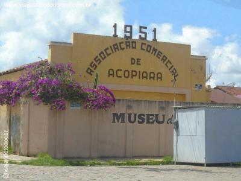

Informações técnicas sobre relevo, população, IDH etc.
| INFORMAÇÕES | |
|---|---|
| Municípios limítrofes | Norte: Mombaça, Piquet Carneiro e Dep. Irapuan Pinheiro, Leste: Quixelô e Solonópole, Sul: Iguatu, Quixelô e Jucás, Oeste: Saboeiro e Catarina |
| Fundação | 28 de setembro de 1921 (99 anos) |
| Área total | 2 265,349 km² |
| Clima | Tropical quente semiárido |
| IDH | 0,597 — baixo |
| PIB | R$ 236 658 mil |
| INFORMAÇÕES TERRITORIAIS | |
|---|---|
| Número de habitantes | 54 270 habitantes |
| Superfície de Acopiara |
225 378 hectares
2253,78 km² (870,19 sq mi) |
| Densidade populacional | 24,1 ha./km² |
| Altitude de Acopiara | 319 metros de altitude |
| Coordenadas geográficas decimais |
Latitude:
-6.09448
Longitude: -39.4545 |
| Coordenadas geográficas sexagesimais | Latitude: 6° 5' 40'' Sul , Longitude: 39° 27' 16'' Oeste |
| INFORMAÇÕES DO MUNICÍPIO | |
|---|---|
| Endereço da Prefeitura Municipal de Acopiara |
Acopiara
Prefeitura de Acopiara
Av. Paulino Félix, 362 Acopiara - CE, 63560-000 Brasil |
| Telefone da prefeitura |
(88) 3565-1567
Internacional: +55 88 3565-1567 |
| Fax |
(85) 3565-0188
+55 85 3565-0188 |
| Endereço electrónicoda prefeitura |
pAcopiara@jbc.com.br
|
| Site oficial do município | acopiara.ce.gov.br |
| INFORMAÇÕES DO ADMINISTRATIVAS | ||
|---|---|---|
| Prefeito de Acopiara | ANTÔNIO ALMEIDA NETO | |
| Partido politico | MDB | |
| INFORMAÇÕES DE TRANSPORTE | |
|---|---|
| Transporte urbano disponível | - |
| Aeroporto |
Aeroporto Regional do Cariri 126.8 km
Aeroporto Dix-Sept Rosado
252 km
Aeroporto de Picos
253 km
|
| INFORMAÇÕES DE DISTÂNCIA A OUTRAS CIDADES | ||
|---|---|---|
| São Paulo : 2090 km | Rio de Janeiro : 1914 km | Brasília : 1421 km |
| Salvador : 772 km | Curitiba : 2393 km | Belo Horizonte : 1603 km |
| Manaus : 2306 km | Fortaleza : 283 km mais perto | Recife : 550 km |
| Goiânia : 1590 km | Belém : 1130 km | Porto Alegre : 2936 km |
| Guarulhos : 2068 km | Campinas : 2042 km | São Luís : 669 km |
| Distância calculada em linha reta! | ||
Conheça mais sobre a história da Acopiara.
Primitivamente sua vinculação geográfica tinha como subordinante o Distrito denominado de Vila Telha (Iguatu). Chamava-se Lages, designativo característico de sua formação geológica, envolvendo pedreiras, elevações irregulares e chãs ribeirinhas, compondo dessa forma pequenos nódulos de solos diversificados. Nesse complexo variado, estabeleceu-se como pioneiro o Alferes Antônio Vieira Pita, a família Pereira e outros imigrantes, com assentamentos que datam da Segunda década do Século XVIII. O primeiro indício de posse consta de uma sesmaria, concedida a um desses pioneiros pelo Capitão-Mor Salvador Alves da Silva, em data de 4 de julho de 1719. Nesse módulo e noutros posteriormente cedidos, situaram-se fazendas e edificaram-se moradias, formando a povoação cujo nome já foi descrito.
Evolução Política: Em regime patriarcalmente estabelecido e dentro das exceções determinadas pelas necessidades de movimentação rotineira, o agregamento inicial transformou-se em povoado, perdendo de sua originalidade as principais características. Quase duzentos anos se passaram, perdidos na lentidão do marasmático progresso, até que no início do Século XX, o bafejo renovador das transformações sociais proporcionou impulsos mais alentadores. Surgiu a Ferrovia Fortaleza-Crato. A povoação de Lages, até então adormecidas, recebeu como prêmio a sua Estação Ferroviária, mantendo o locativo inicial (10 de julho de 1919).
A contar de então, Lages tomou novos rumos e partiu para a sua emancipação já nos padrões urbanos dos quais resultaria a consecução desse objetivo. O seu desmembramento, na qualidade de Distrito até então vinculado ao Iguatu, deu-se consoante Lei nº 1.875.
Fundada em 28 de setembro de 1921, instalando-se a Vila em data de 14 de janeiro de 1922. Em 1923, consoante Decreto nº 1.156, Lages passou à denominação de Afonso Pena, homenagem que se prestava a um dos Presidentes brasileiros. Sua elevação à categoria de Cidade ocorreu segundo Decreto nº 448, de 20 de dezembro de 1938, tendo sido seu primeiro Prefeito Celso de Oliveira Castro.
Como em muitas cidades do interior do Ceará, Acopiara tem em sua produção agrícola a maior fonte de renda, muito embora possa-se verificar que a agricultura se apresente ainda na sua maioria como de subsistência de pequenos produtores. Destaque para o ramo aviário, que cresceu muito nos últimos anos.
Na década de 1970, Acopiara foi o segundo produtor de algodão do estado do Ceará, mas as constantes secas, bem como a inserção do bicudo em suas lavouras, contribuíram para que sua produção fosse bastante reduzida, contudo o ramo algodoeiro ainda tem contribuído muito na economia acopiarense.
Saiba mais sobre os melhores lugares e o que fazer em Acopiara.
Acredita-se que Nossa Senhora do Perpétuo Socorro foi institui santa padroeira de Acopiara em 1921. Em estilo barroco e perfil moderno, a igreja-matriz teve como fundador Monsenhor José Coelho da Rocha e como seu primeiro vigário o padre Leopoldo Rolim. Acopiara, Ceará, Brasil.
Museu de AcopiaraCriado em 1998, o Museu está instalado na Associação Comercial da cidade, situada na Rua Afonso Pena, e administrado por uma Organização Não Governamental, a ONG Raízes. Acopiara, Ceará, Brasil.

Veja como chegar nos melhores pontos de Acopiara